F-40 Removing the fairing
19 Sep 2013
I’ve experimented with several ways to remove the fairing from the F-40 turning it into a P-38. These are my latest thoughts.
Taking the fairing off only requires about 10 minutes. Of course if you also take lots of pictures it can take a lot longer.
Start out with the spandex fully zipped up:
| 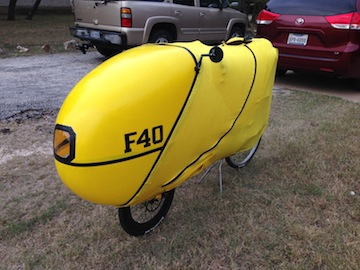 | 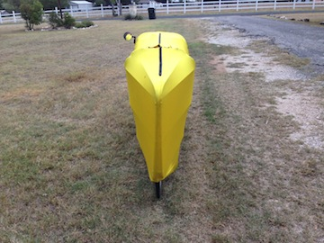 | 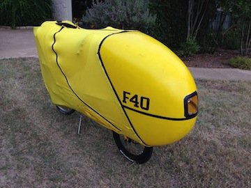 |
Next we are going to just peel the spandex off starting from the front and then proceed towards the back. First un-velcro the two front sides:
| 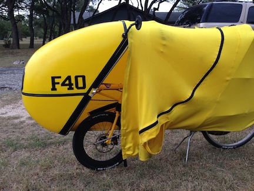 | 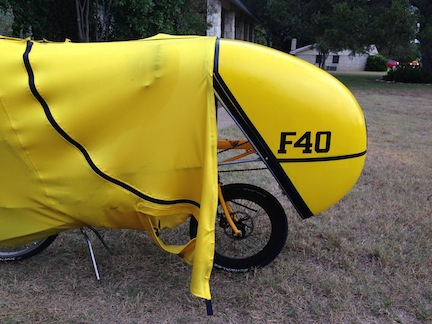 |
Unzip the bottom section:
| 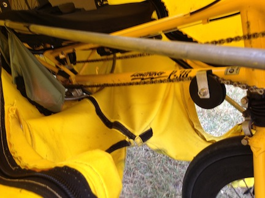 | 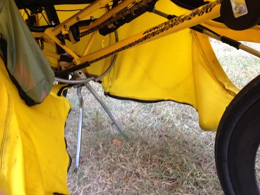 |
Now unvelcro and peel back the top spandex from the front fairing:
| 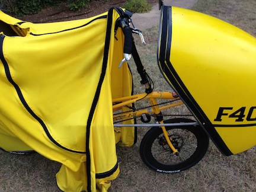 |
Keep gently peeling back the spandex until it is laying on the ground under the rear wheel.
| 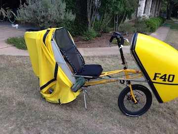 | 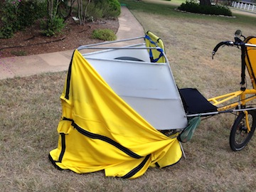 | 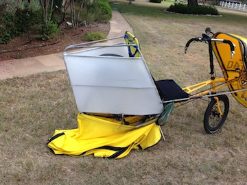 |
Unvelcro the spandex from the tail frame bottom:
| 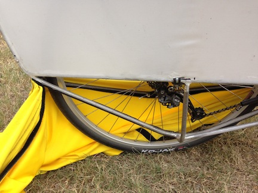 | 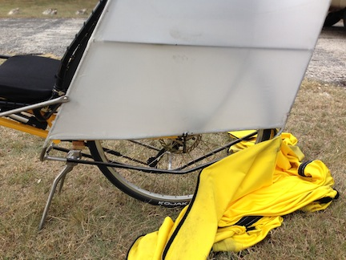 |
Put the spandex somewhere out of the way. Now the two things left to remove are the front fairing and the rear tail frame.
| 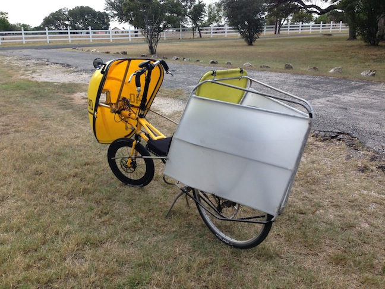 |
Tools you are going to need to take the fairing off:
| 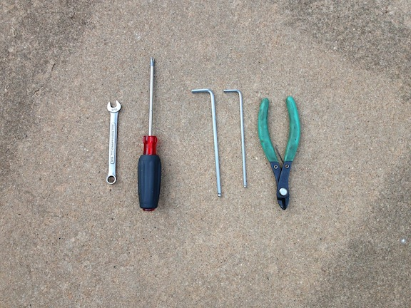 |
The front fairing is held on by two tie-wraps and the right side strut. The left side strut is spring-loaded attached so that you can enter and exit the F-40 easier.
| 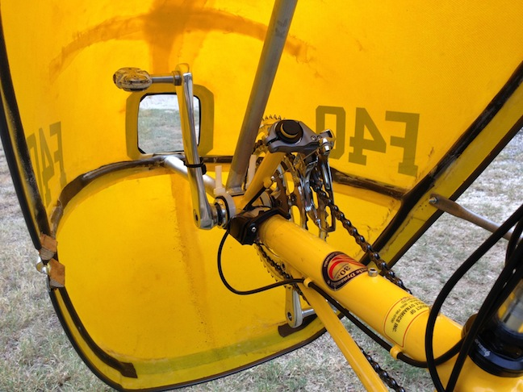 |
Disconnect the right side strut from the front fairing and snip the two tie-wraps at the bottom of the bottom-bracket.
| 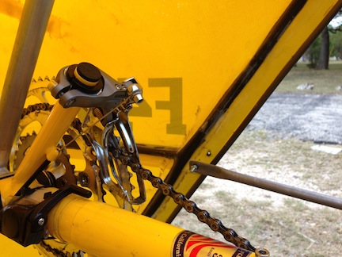 | 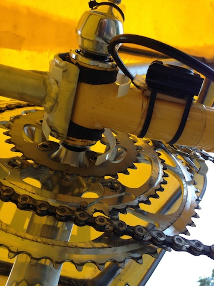 |
You are now ready to remove the front fairing. Never pull or push on the fairing itself. Only pull and push on the inside tubing structure. When removing the fairing I lay on the ground and brace my elbow against the front fork stem so that I wiggle/push the inside tubing with both hands. Gently wiggle off the front fairing.
| 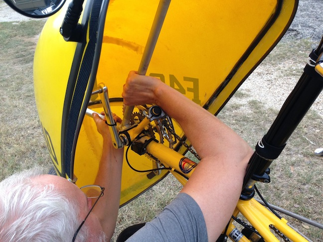 |
When I put the front fairing on I make sure to grease the rubber damper. When removing the fairing I make sure to remove the rubber damper from the front of the bike and store it inside the fairing.
| 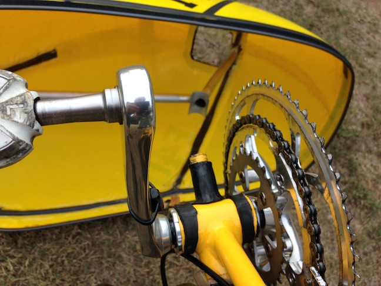 |
With the front fairing off the only thing left if the rear tail frame which is held on at 6 attachment points:
- 1 on each side where the side struts attach
- 2 at the top of the seat
- 1 on each side at the dropouts
Remove the two side struts.
| 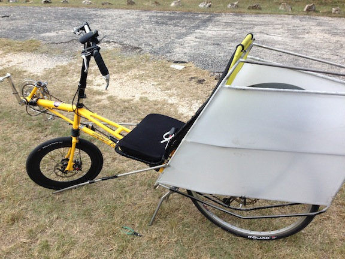 |
I keep the nuts and bolts attached to the struts so that I can find them again later when I want to put the fairing back on. The right side strut has my feed bags attached. When riding I just reach down with my right hand and fish around in the bag for stuff. The other bag is for my cell phone so that I can easily reach it to take pictures.
| 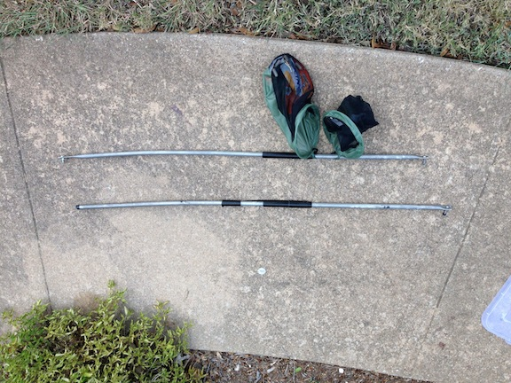 |
| 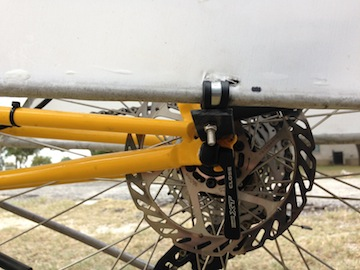 | 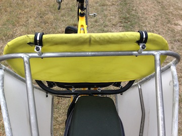 | 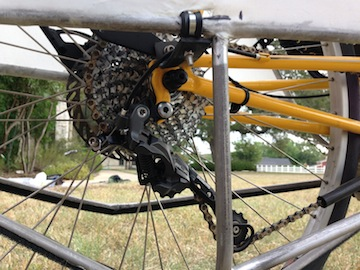 |
| 1 on the left dropout | 2 at the top of the seat | 1 on the right dropout |
I also remove the rack top bag because I use a seat back bag when riding the P-38
| 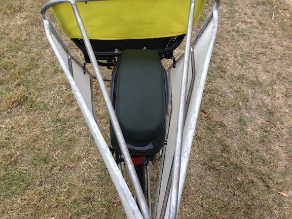 |
We now have a P-38
| 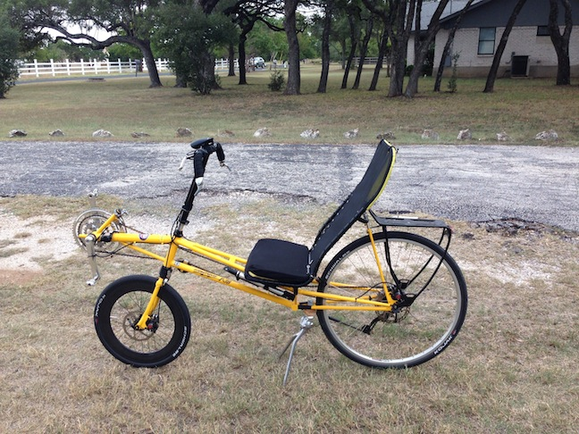 |
I move my stuff from the F-40 rack top bag to the P-38 seat back bag.
- tool pouch
- tubes
- sun screen
| 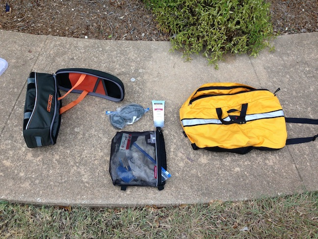 |
Put the seat bag on the back of the P-38
| 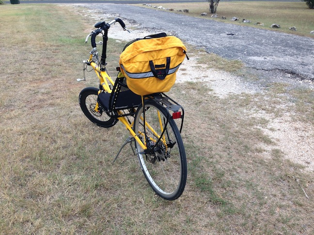 |
Of course when I went to go for a ride I remembered that I also needed to:
- put a flashing light on the back of the seat back bag
- put a rear-view mirror on the handle bars